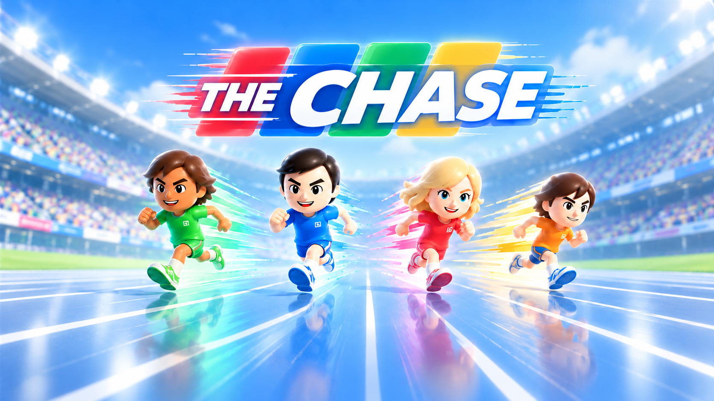

Loading the stadium…
Your character
Settings
User account
GuestSign in with Google to sync your question bank and publish sets.
Your questions stay on this device.
Signing out keeps this device’s saved questions. Public sharing is always optional.Sound & music
Choose a comfortable volume for your game.
Language
My Classes
Add and edit the classes you teach. Sign in to sync them across your devices.
Sign in to sync classes across your devices.
Question order
Camera & devices
No camera connected.
Set up your race.
Choose a class
Your selected class will be recorded with race results.
Your recent races
Results saved on this device. Each race includes every player and AI rival.
Race results
Run. Choose. Jump!
- Keep jogging. Jog in place to keep your athlete moving. Stopping lets rivals catch up.
- Read, then choose a lane. A, B and C match the three answers. Wave your left hand or arm to hop left, or your right to hop right.
- Watch the pulse. When “Jump!” expands, jump straight up over the hurdle to answer.
- Race together. Shared lanes and split screen both keep your opponents visible.
P1: ← → · Space jump · R jog
P2: A D · W jump · S jog
P3: J L · I jump · K jog
P4: F H · T jump · G jog
For camera play, stand far enough back to show your full body. Tracking loss pauses the race.
Your track is waiting.
The race, timer and chase are paused.
Open the camera to find and re-lock players.
Race leaderboard
A little room to move.
Stand back until your whole body is visible. Stand anywhere in view; tap each person to assign a player.
Waiting for the camera…
On the camera device, open this game and choose “Use as camera” to enter the PIN. Or scan the QR code. Then enable the camera and calibrate.
Open camera controller ↗AI assist
Create, review and save your own questions.
Questions in this set: 0
Subjects shown follow SJK(C). Sejarah and RBT start in Year 4. Suggestions are editable.
✦ AI question assistant
Copy this prompt into any AI chatbot, then paste its response here. Imported questions stay as editable drafts until you add them to your pack.
Choose a question count. Select a suggested topic or type your own.
Write a question
Edits, removals and deletions stay in your batch until you save. Sample changes affect your bank only.
Discover your next classroom quiz.
Find a Sample or community quiz. Preview it, then add a private copy to your bank.
You move.
They race.
Place this phone where every player’s full body is visible. Leave this screen open.
Connecting to your game…
A live preview is shared with your paired game screen. Video is not saved. Keep this browser visible.One code. Ready to move.
Select External camera on the game screen, then enter the six-digit pairing PIN shown there.
Enter a PIN
Scan a QR code
Scan the pairing QR shown on the game screen with this device’s camera.
Camera access starts only when you open the scanner.